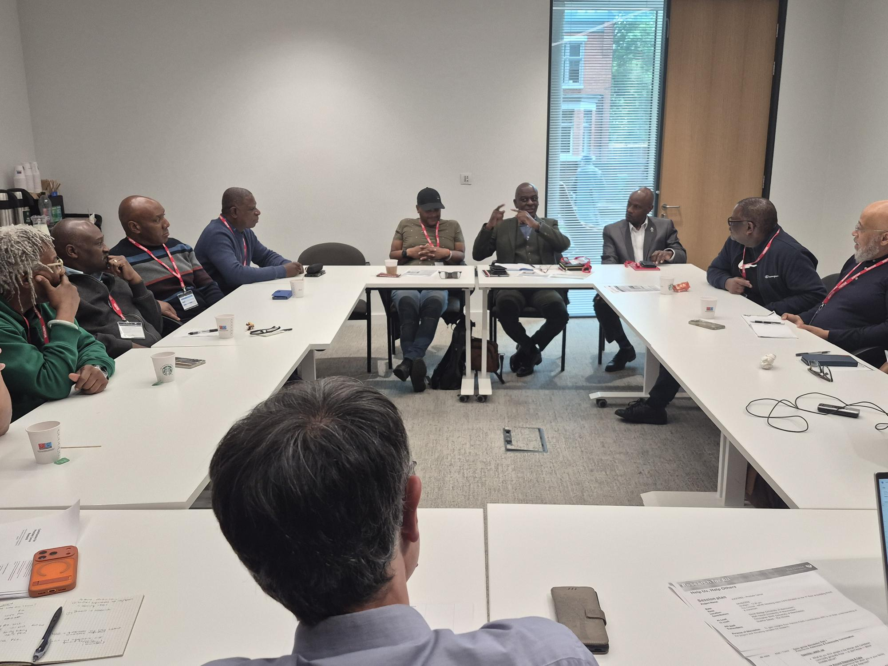
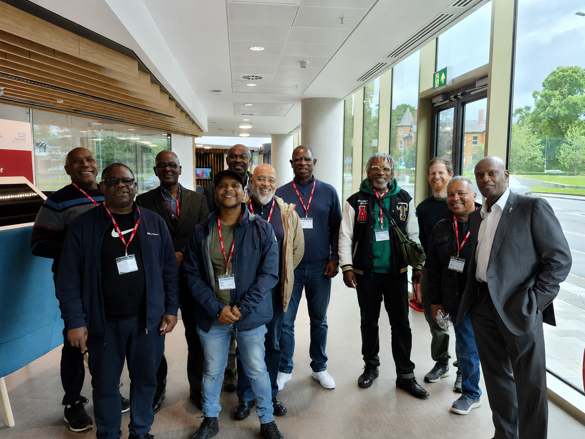

About the event
We partnered with The Christie Hospital's 'Research for All' to bring together Black men with lived experience of prostate cancer to hear about their experiences and introduce our research. The session created an opportunity for contributors to meet others with similar experiences, share their stories and discuss what matters to them.
We also explored their views on taking part in research, including what might encourage or discourage participation, experiences of donating samples and information for research, and how researchers can better engage with Black communities.
The discussion helped us understand how we can make our research more accessible, relevant and meaningful to the communities we hope to work with.
“"Help me to 'help me' - It's about educating us to educate other men"
— Patient contributor


What we discussed
Lived experience of prostate cancer
Contributors shared their experiences of diagnosis, treatment and living with prostate cancer.
Taking part in research
What people think about participating in research and what might influence their decision to take part.
Barriers to participation
What can make it difficult for Black men to engage with or participate in prostate cancer research.
Donating samples and information
Views on providing tissue, blood and personal information for research, and what people would want to know before agreeing to take part.
Communication and trust
How researchers can explain studies clearly, build trust and make research more approachable and accessible.
Staying connected
How participants would like researchers to keep in touch and share progress after they have contributed to a study.
Research should be a two-way relationship
Contributors told us that good research engagement is not only about asking people to participate. People want to understand why the research matters, what their contribution will be used for and what happens afterwards.
Contributors highlighted the importance of:
- Provide clear and accessible information about the research
- Explain why samples and information are being collected and how they will be used
- Recognise and address barriers that may prevent people from taking part
- Build trust through meaningful engagement with Black communities
- Keep participants informed about the progress of research they have contributed to
- Create opportunities for continued involvement and conversation with the research team
From conversation to action:
What we heard is shaping how we engage
The discussion reinforced the importance of maintaining a relationship with contributors beyond a single research activity. In response, we are developing ways to keep our contributors and the wider community connected with the study. This includes creating this website to share study progress, research updates and upcoming events, and developing a study brochure to explain our research in an accessible way. We are also continuing to organise opportunities for contributors and members of the community to meet the research team, ask questions and help shape the study as it develops.